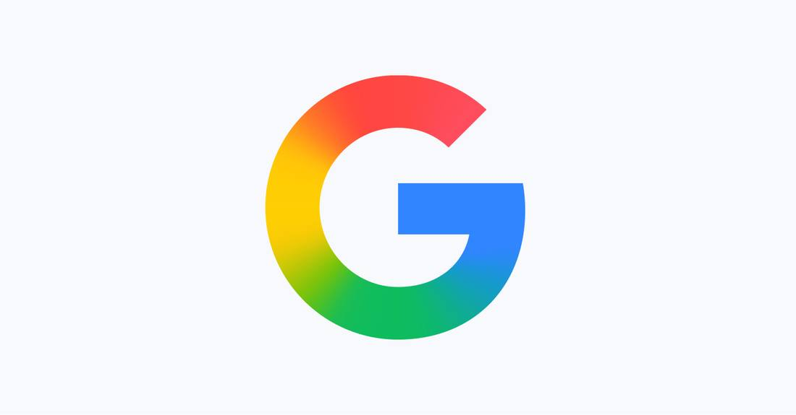
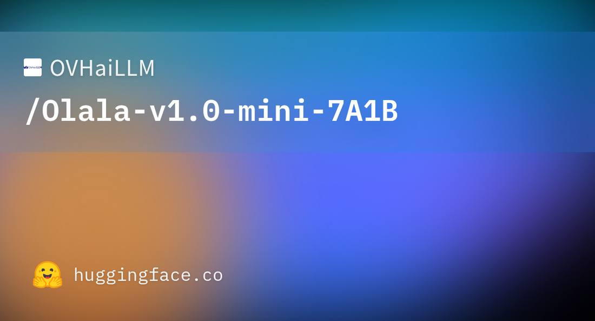
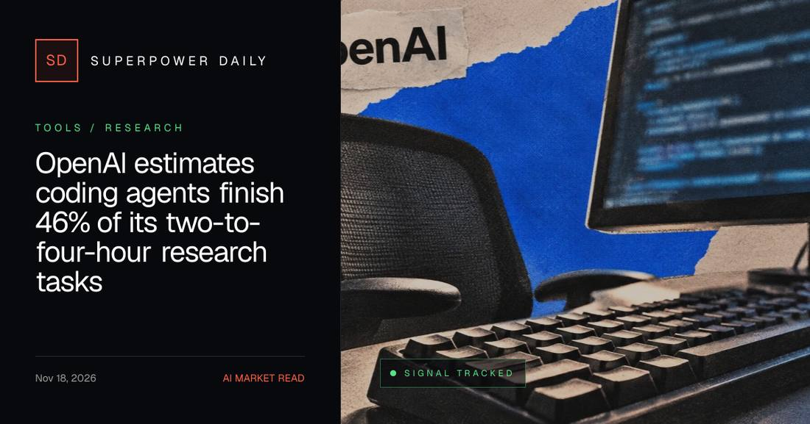
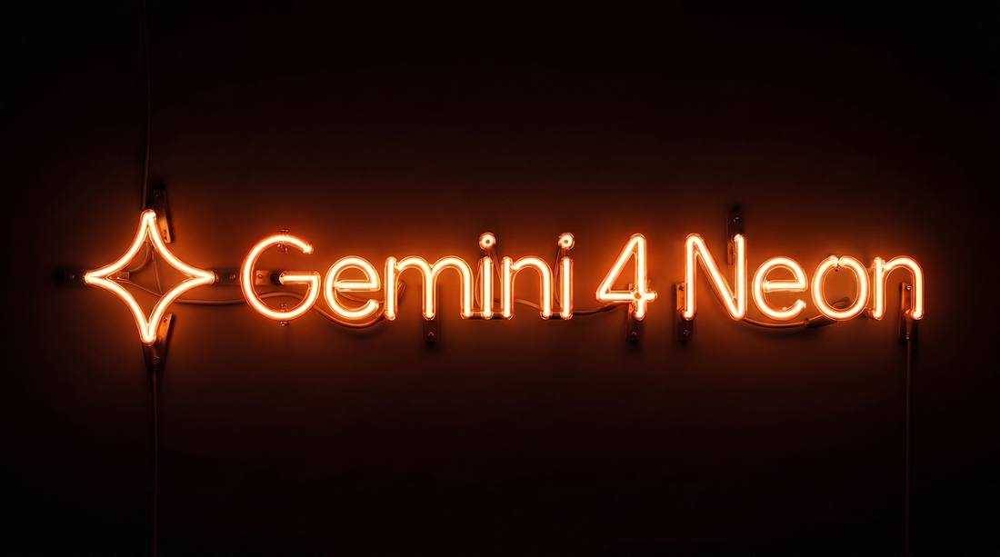

Facts first
Reporting and analysis are kept apart on every page. Sources and uncertainty are stated, not buried.

Anthropic shares closed their first Nasdaq session at $97.17 on November 19, 2026, up 17.1% from the $83 IPO price, after opening at $111.50 and touching $115.10 in early trading. The close sits about 13% below the open, on a day the Nasdaq fell 1.5% and the S&P 500 fell 1.4%. The $81.34 billion offering is the largest IPO on record, and Anthropic is the first standalone AI lab to trade publicly. This flash updates flash 433, which covered the debut open.
 Anthropic Opens at $111.50, Up 34%, in Record IPO DebutAnthropic shares opened at $111.50 on the Nasdaq on November 19, 2026, up 34% from the $83 IPO price, valuing the Claude maker at about $2 trillion on a fully diluted basis. The first trade printed around 11:50 a.m. ET after the opening auction, and shares rose as high as $114.99 in early trading. The $81.34 billion offering is the largest IPO on record, and Anthropic is the first standalone AI lab to trade publicly. This flash updates flashes 421 and 425, which covered the $83 pricing and the 980-million-share confirmation.
Anthropic Opens at $111.50, Up 34%, in Record IPO DebutAnthropic shares opened at $111.50 on the Nasdaq on November 19, 2026, up 34% from the $83 IPO price, valuing the Claude maker at about $2 trillion on a fully diluted basis. The first trade printed around 11:50 a.m. ET after the opening auction, and shares rose as high as $114.99 in early trading. The $81.34 billion offering is the largest IPO on record, and Anthropic is the first standalone AI lab to trade publicly. This flash updates flashes 421 and 425, which covered the $83 pricing and the 980-million-share confirmation.
Google Books Blue Origin's New Glenn to Launch AI Satellites in 2029Google announced on November 19, 2026 that Blue Origin's New Glenn rocket will fly the first dedicated heavy-lift launch for Project Suncatcher in the first quarter of 2029, carrying several solar-powered satellites equipped with Google TPUs into sun-synchronous orbit. Each satellite carries roughly the computing capacity of a data center rack. The agreement is the project's first commitment to a specific vehicle and year; the contract value and satellite count were not disclosed. This flash updates stock 127, which covered the Suncatcher prototype launch on October 1, 2026. Remote-Access Chip Rule Takes Effect as Federal Register Publishes ItThe U.S. Commerce Department's interim final rule closing the remote-access route to advanced AI chips was published in the Federal Register on November 19, 2026 (FR Doc. 2026-23529) and took effect the same day. Data centers anywhere in the world that supply more than 12 million aggregate TPP of computing power to companies headquartered in China, Macau or other Country Group D:5 destinations now need a licence, and exports of advanced chips to five diversion-risk countries need one too. Existing data-center arrangements have 90 days to obtain licences, and comments on the rule are due by January 19, 2027. This flash updates ISSUE 389, which covered the rule's issuance on November 16, 2026.
Remote-Access Chip Rule Takes Effect as Federal Register Publishes ItThe U.S. Commerce Department's interim final rule closing the remote-access route to advanced AI chips was published in the Federal Register on November 19, 2026 (FR Doc. 2026-23529) and took effect the same day. Data centers anywhere in the world that supply more than 12 million aggregate TPP of computing power to companies headquartered in China, Macau or other Country Group D:5 destinations now need a licence, and exports of advanced chips to five diversion-risk countries need one too. Existing data-center arrangements have 90 days to obtain licences, and comments on the rule are due by January 19, 2027. This flash updates ISSUE 389, which covered the rule's issuance on November 16, 2026. PDD Revenue Stalls as Temu Fees Fall 12% in First Full EU-Duty QuarterPDD Holdings reported third-quarter 2026 revenue of RMB108,341 million on November 19, 2026, essentially flat year over year and about RMB7.7 billion below the LSEG analyst average of RMB115.97 billion, a fifth consecutive quarterly revenue miss. Transaction services revenue fell 12% to RMB48,522 million in the first full quarter under the EU duty on low-value parcels, while online marketing services revenue rose 12% to RMB59,819 million. Operating profit rose 25% to RMB31,164 million on a 17% cut in sales and marketing spending; non-GAAP diluted earnings per ADS of US$3.14 beat the $2.77 consensus. Shares rose about 9% in pre-market trading.
PDD Revenue Stalls as Temu Fees Fall 12% in First Full EU-Duty QuarterPDD Holdings reported third-quarter 2026 revenue of RMB108,341 million on November 19, 2026, essentially flat year over year and about RMB7.7 billion below the LSEG analyst average of RMB115.97 billion, a fifth consecutive quarterly revenue miss. Transaction services revenue fell 12% to RMB48,522 million in the first full quarter under the EU duty on low-value parcels, while online marketing services revenue rose 12% to RMB59,819 million. Operating profit rose 25% to RMB31,164 million on a 17% cut in sales and marketing spending; non-GAAP diluted earnings per ADS of US$3.14 beat the $2.77 consensus. Shares rose about 9% in pre-market trading.| WORLD & POLICY | 25 |
| MARKETS & INDUSTRY | 138 |
| AI FRONTIER | 258 |
| ROBOTICS & AI | 35 |
| WEB3 INFRASTRUCTURE | 5 |
| RESEARCH & SCIENCE | 10 |
Anthropic Closes First Day at $97.17, Up 17%, After Fading From $111.50 OpenAnthropic shares closed their first Nasdaq session at $97.17 on November 19, 2026, up 17.1% from the $83 IPO price, after opening at $111.50 and touching $115.10 in early trading. The close sits about 13% below the open, on a day the Nasdaq fell 1.5% and the S&P 500 fell 1.4%. The $81.34 billion offering is the largest IPO on record, and Anthropic is the first standalone AI lab to trade publicly. This flash updates flash 433, which covered the debut open.Anthropic Opens at $111.50, Up 34%, in Record IPO DebutAnthropic shares opened at $111.50 on the Nasdaq on November 19, 2026, up 34% from the $83 IPO price, valuing the Claude maker at about $2 trillion on a fully diluted basis. The first trade printed around 11:50 a.m. ET after the opening auction, and shares rose as high as $114.99 in early trading. The $81.34 billion offering is the largest IPO on record, and Anthropic is the first standalone AI lab to trade publicly. This flash updates flashes 421 and 425, which covered the $83 pricing and the 980-million-share confirmation.Google Books Blue Origin's New Glenn to Launch AI Satellites in 2029Google announced on November 19, 2026 that Blue Origin's New Glenn rocket will fly the first dedicated heavy-lift launch for Project Suncatcher in the first quarter of 2029, carrying several solar-powered satellites equipped with Google TPUs into sun-synchronous orbit. Each satellite carries roughly the computing capacity of a data center rack. The agreement is the project's first commitment to a specific vehicle and year; the contract value and satellite count were not disclosed. This flash updates stock 127, which covered the Suncatcher prototype launch on October 1, 2026.Remote-Access Chip Rule Takes Effect as Federal Register Publishes ItThe U.S. Commerce Department's interim final rule closing the remote-access route to advanced AI chips was published in the Federal Register on November 19, 2026 (FR Doc. 2026-23529) and took effect the same day. Data centers anywhere in the world that supply more than 12 million aggregate TPP of computing power to companies headquartered in China, Macau or other Country Group D:5 destinations now need a licence, and exports of advanced chips to five diversion-risk countries need one too. Existing data-center arrangements have 90 days to obtain licences, and comments on the rule are due by January 19, 2027. This flash updates ISSUE 389, which covered the rule's issuance on November 16, 2026.PDD Revenue Stalls as Temu Fees Fall 12% in First Full EU-Duty QuarterPDD Holdings reported third-quarter 2026 revenue of RMB108,341 million on November 19, 2026, essentially flat year over year and about RMB7.7 billion below the LSEG analyst average of RMB115.97 billion, a fifth consecutive quarterly revenue miss. Transaction services revenue fell 12% to RMB48,522 million in the first full quarter under the EU duty on low-value parcels, while online marketing services revenue rose 12% to RMB59,819 million. Operating profit rose 25% to RMB31,164 million on a 17% cut in sales and marketing spending; non-GAAP diluted earnings per ADS of US$3.14 beat the $2.77 consensus. Shares rose about 9% in pre-market trading. Alibaba Beats on Revenue as AI Cloud Revenue Jumps 53%Alibaba beat September-quarter revenue estimates on November 19, 2026, reporting RMB271,519 million, up 10% year over year, against an LSEG average of RMB269,810 million. AI Cloud and Compute Services revenue jumped 53% to RMB60,973 million, with external customer revenue up 64% and AI-related product revenue growing at triple-digit rates for a thirteenth consecutive quarter. Net income rose 213% to RMB64,420 million, mostly on net investment income; non-GAAP net income rose 92%. T-Head's Zhenwu V900 AI chip is due for commercial release in the first quarter of 2027.
Alibaba Beats on Revenue as AI Cloud Revenue Jumps 53%Alibaba beat September-quarter revenue estimates on November 19, 2026, reporting RMB271,519 million, up 10% year over year, against an LSEG average of RMB269,810 million. AI Cloud and Compute Services revenue jumped 53% to RMB60,973 million, with external customer revenue up 64% and AI-related product revenue growing at triple-digit rates for a thirteenth consecutive quarter. Net income rose 213% to RMB64,420 million, mostly on net investment income; non-GAAP net income rose 92%. T-Head's Zhenwu V900 AI chip is due for commercial release in the first quarter of 2027.
OVHcloud's Olala Mini 7A1B Weights Go Live on Hugging FaceOVHcloud's Olala mini 7A1B, announced November 17, 2026, went live as downloadable open weights on Hugging Face by the morning of November 19, the day of its official launch at the OVHcloud AI Summit in Paris. The 6.8-billion-parameter model, with about 1 billion active per token, was trained on three European public supercomputers and is released under Apache 2.0. It is already in production use on Qwant's search results. The model card's benchmark average of 68.0 is vendor-reported, and the promised technical report is still the document that has to carry the evidence. Musk: Anthropic Wants Another 10 Gigawatts of SpaceX ComputeAt the New York Times DealBook Summit on November 18, 2026, Elon Musk said Anthropic told him it is extremely likely to keep renting compute from SpaceX and that its highest-probability outcome is an incremental 10 gigawatts, more than 30 times its current Colossus 1 deal of over 300 megawatts. Anthropic has not publicly confirmed the figure. The existing agreements run to up to $120.5 billion through 2029, and either side can terminate after the initial periods end in January and March 2027.
Musk: Anthropic Wants Another 10 Gigawatts of SpaceX ComputeAt the New York Times DealBook Summit on November 18, 2026, Elon Musk said Anthropic told him it is extremely likely to keep renting compute from SpaceX and that its highest-probability outcome is an incremental 10 gigawatts, more than 30 times its current Colossus 1 deal of over 300 megawatts. Anthropic has not publicly confirmed the figure. The existing agreements run to up to $120.5 billion through 2029, and either side can terminate after the initial periods end in January and March 2027.
OpenAI: Coding Agents Now Finish 46% of Two-to-Four-Hour Research Tasks AloneOpenAI published 'Research acceleration: The jagged frontier' on November 18, 2026, updating its September account of AI-assisted research. Coding agents now complete an estimated 46% of research tasks needing two to four hours of human work without human intervention, up from 23% in March; for four-to-eight-hour tasks the figure rose from 13% to 35%. The gains are uneven by task, and OpenAI calls on AI labs to track and publicly report indicators of recursive self-improvement. Anthropic Confirms $83 IPO at 980 Million Shares, the Largest on RecordAnthropic confirmed its initial public offering on the evening of November 18, 2026, pricing 980 million Class A shares at $83.00 each, a $81.34 billion gross value that makes it the largest IPO on record by proceeds at pricing, passing SpaceX's $75 billion June debut. The offering is 155 million shares larger than the 825 million in the prospectus, a gap Flash 421 could not fill because the final count had not been disclosed. Shares begin trading Thursday, November 19, on the Nasdaq under the ticker ANT.
Anthropic Confirms $83 IPO at 980 Million Shares, the Largest on RecordAnthropic confirmed its initial public offering on the evening of November 18, 2026, pricing 980 million Class A shares at $83.00 each, a $81.34 billion gross value that makes it the largest IPO on record by proceeds at pricing, passing SpaceX's $75 billion June debut. The offering is 155 million shares larger than the 825 million in the prospectus, a gap Flash 421 could not fill because the final count had not been disclosed. Shares begin trading Thursday, November 19, on the Nasdaq under the ticker ANT. California Proposes Mandatory Frontier AI Oversight, State Shutdown PowersCalifornia Governor Gavin Newsom released legislative recommendations on November 18, 2026, that would require large frontier AI developers to meet state-set safety standards, submit to continuous oversight by licensed independent verifiers, and face state-ordered emergency shutdowns of models posing imminent catastrophic risks. The 85-page report, AI Safety in 2026 and Beyond, also proposes standby authority to cap recursive self-improvement. The recommendations are not law; they are written to shape legislation when lawmakers return in December.
California Proposes Mandatory Frontier AI Oversight, State Shutdown PowersCalifornia Governor Gavin Newsom released legislative recommendations on November 18, 2026, that would require large frontier AI developers to meet state-set safety standards, submit to continuous oversight by licensed independent verifiers, and face state-ordered emergency shutdowns of models posing imminent catastrophic risks. The 85-page report, AI Safety in 2026 and Beyond, also proposes standby authority to cap recursive self-improvement. The recommendations are not law; they are written to shape legislation when lawmakers return in December.
Google Launches Gemini 4 Neon, Its Fast Mid-Tier Model, Topping the Coding Agent IndexGoogle introduced Gemini 4 Neon on November 18, 2026, the fourth model in the Gemini 4 family, built for complex software engineering, knowledge work and science. It debuts at No. 1 on the Artificial Analysis Coding Agent Index and No. 3 overall on the Intelligence Index, priced at $3 per million input tokens and $15 per million output tokens with a 1 million-token context window. Neon is rolling out today in the Gemini API, Gemini for business, Google Antigravity and the Gemini app for paid subscribers.Policy, geopolitics and macro forces — the events that move the map.
OPEN DESK → · 25 REPORTS02Capital, deals and industry structure, with every number sourced.
OPEN DESK → · 138 REPORTS03Models, agents and compute — verified against primary sources before publication.
OPEN DESK → · 258 REPORTS04Humanoids, embodied AI and automation — real deployments, not demos.
OPEN DESK → · 35 REPORTS05Blockchain infrastructure and industry facts. No investment advice.
OPEN DESK → · 5 REPORTS06Papers, labs and frontier science, with the limits of each claim stated.
OPEN DESK → · 10 REPORTSOne sponsor slot per cycle across the briefing and the homepage. Pricing steps up with real traffic. Audience numbers are never inflated.
Reporting and analysis are kept apart on every page. Sources and uncertainty are stated, not buried.
Key facts link back to the publishing institution and the original document, with page screenshots on file.
Each report carries a screenshot of its primary source. One click takes you to the original.
Events, timelines and entities are linked, so a headline becomes a position in a larger picture.
We monitor official announcements, filings, wire reporting and front-line social signals, then merge duplicate coverage of the same event.
Social posts are leads, never sources. Each event is confirmed against its primary source and a second independent report before publication.
Background, timelines and related entities are attached to every event, and follow-ups are published as updates to the same record.